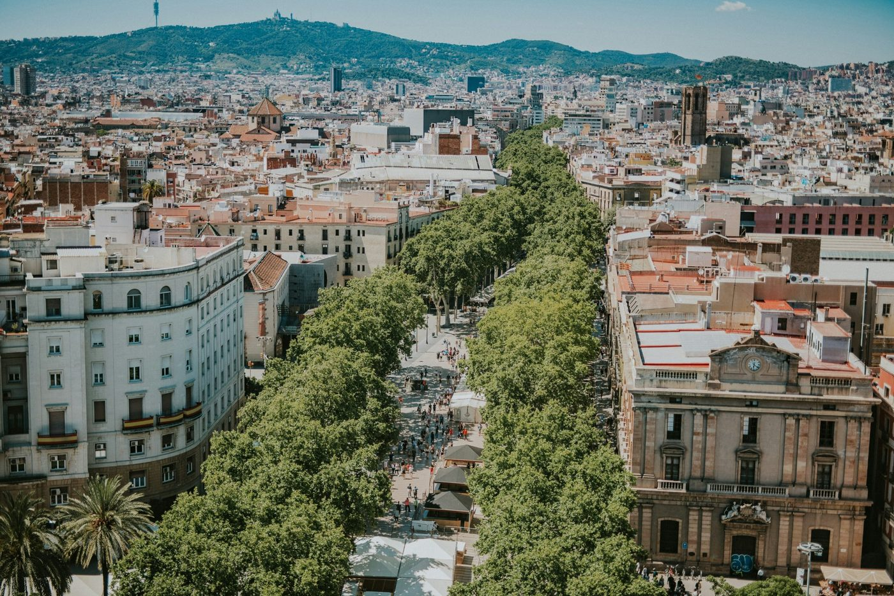
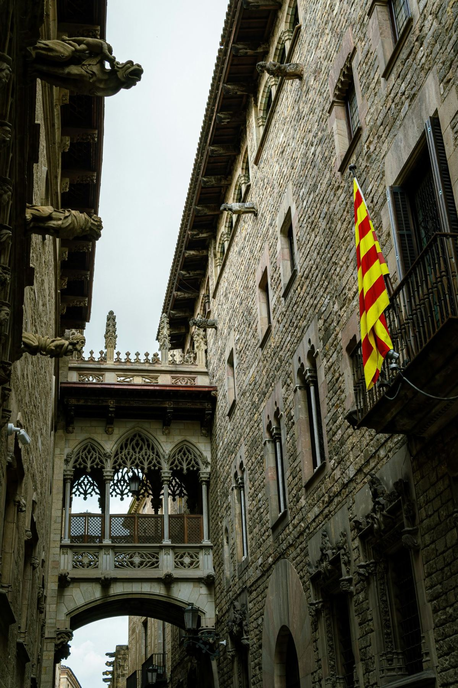
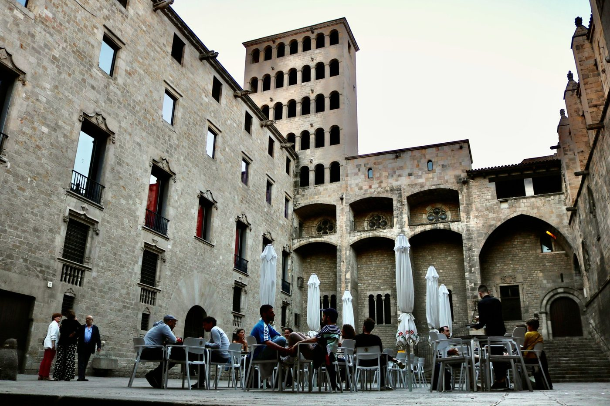

Barcelona rewards people who are willing to walk. The Gothic Quarter is a medieval labyrinth that gives up different details every time. Passeig de Gràcia is one of the great urban boulevards of Europe. The beach is five minutes from the old city. Three days is enough to get a real feel for the place, as long as you spend them in the right neighbourhoods.
This itinerary is organised around geographic logic. Each day starts in one part of the city and moves through it in a way that makes sense on foot. The routes overlap with the Stepcast Barcelona and Barcelona Gaudí audio tours, so you can go deeper on the stops that interest you most.
How Barcelona
is organised.
Barcelona sits between the sea to the south and a ring of hills to the north and west. The old city, la Ciutat Vella, runs along the waterfront and contains the Gothic Quarter, El Born, El Raval and the Barceloneta neighbourhood. Directly north of the old city, the 19th-century Eixample district stretches outward in an orderly grid of octagonal blocks, designed by Ildefons Cerda from 1860 onward. Most of what first-time visitors come to see is spread between these two zones, with Montjuïc hill to the southwest and the residential neighbourhood of Gràcia uphill to the north.
The Metro is fast and reliable. But the distances between many of the main areas are short enough that walking is usually the better option: the walk from Plaça de Catalunya to Santa Maria del Mar takes about 20 minutes. From the bottom of Passeig de Gràcia to the Sagrada Família is around 25 minutes. Once you have the geography in your head, the city becomes much more manageable.
The Gothic Quarter
and El Born.
Start at Plaça de Catalunya, the large central square at the top of Las Ramblas. This is where the Stepcast Barcelona audio tour begins, and it is the natural starting point for the old city: the square sits at the junction between the Eixample to the north and the Ciutat Vella to the south, with the whole of the Gothic Quarter directly ahead of you.
Walk south down Las Ramblas. The boulevard runs for about 1.2 kilometres from Plaça de Catalunya to the waterfront and is one of the most visited streets in Europe. It is also one of the most pickpocketed. Keep your bag in front of you, be alert to anyone who gets unnecessarily close, and do not use your phone while walking. With that in mind: the Ramblas is worth the walk. The flower stalls, the newspaper kiosks, the 18th-century Palau de la Virreina on your left, and the energy of the street at any hour are genuinely worth experiencing. Just pay attention.
Las Ramblas is one of the most pickpocket-dense streets in Europe. Keep bags in front of you, do not use your phone while walking, and do not accept help from strangers with anything. The street is worth walking, but it requires awareness throughout.
Turn left off the Ramblas into Plaça Reial, a grand 19th-century square ringed by arcaded buildings with a fountain at the centre. The lamp posts were designed by the young Antoni Gaudí in 1879, one of his first commissions. The square has restaurants on every side and fills with people in the evenings.
From Plaça Reial, head east into the Barri Gòtic, the Gothic Quarter. This is the oldest part of Barcelona: the medieval street plan overlays a Roman city, Barcino, founded in the first century BC. Sections of the original Roman walls survive and are visible in several places, most notably along the Carrer del Bisbe and in the underground Museu d'Història de Barcelona beneath Plaça del Rei. You are walking through 2,000 years of continuous urban history. The narrow streets, the sudden changes of level, the glimpses of Roman stonework through gaps in the medieval fabric are the point.
Barcelona Cathedral stands at the heart of the Gothic Quarter. The current building was constructed between 1298 and 1450, though the neo-Gothic facade was not added until the late 19th century. The interior is dark, cool and vast. The cloister behind the cathedral is one of the more unusual spaces in the city: it contains a garden with palm trees and magnolias and, famously, thirteen white geese that have been kept here since the medieval period, traditionally representing the age of Santa Eulalia, co-patron of Barcelona, at the time of her martyrdom.
Walk a few minutes east to Plaça del Rei, the medieval royal palace square. The main building facing you, the Saló del Tinell, is where Ferdinand and Isabella received Christopher Columbus on his return from the Americas in 1493. The square is surrounded by some of the finest medieval civic architecture in Barcelona and is usually quieter than the streets around it.
Continue east to Santa Maria del Mar, the great church of the Ribera quarter. This is sometimes called the people's cathedral: it was built by the residents of the neighbourhood themselves, between 1329 and 1383, without noble or royal patronage. Stevedores, fishermen and merchants of the Ribera carried the stone from the quarries at Montjuïc. The result is one of the purest and most beautiful Gothic interiors in Catalonia: three naves of equal height, slender octagonal columns, and a clarity of space that the more ornate Barcelona Cathedral does not have. Spend time here.
End the afternoon at Parc de la Ciutadella, the large green park just east of El Born. The park occupies the site of the Bourbon citadel built in 1714 after the Spanish conquest of Barcelona, which was demolished in the 19th century. The Cascada fountain at the northern end of the park was partly designed by the young Gaudí. In the evening, stay in the El Born neighbourhood: the streets between Santa Maria del Mar and the Parc de la Ciutadella are full of good bars and restaurants, and the tradition of vermouth before dinner is taken seriously here.
The Stepcast Barcelona tour
follows Day 1's exact route.
Plaça de Catalunya, Las Ramblas, Plaça Reial, the Roman walls, Barcelona Cathedral, Plaça del Rei, Santa Maria del Mar, Parc de la Ciutadella. Audio commentary at every stop. Go at your own pace. First 3 stops completely free.
Try the Barcelona tour for free →
Gaudí and
Modernisme.
Start on Passeig de Gràcia, the grand 19th-century boulevard of the Eixample, at the block between Carrer d'Aragó and Carrer del Consell de Cent. This stretch is known as the Manzana de la Discordia, the Block of Discord: three competing Modernisme masterpieces on a single city block, each commissioned around the same time by wealthy Catalan families who hired the three leading architects of the movement.
Casa Lleo Morera, on the corner, was designed by Lluís Domenech i Montaner and completed in 1906. Casa Amatller, next door, is by Josep Puig i Cadafalch, completed in 1900. Casa Batlló, the most famous of the three, is by Antoni Gaudí, remodelled between 1904 and 1906. This block is worth pausing over: Modernisme was not one architect's vision but a movement, and the comparison between three radically different interpretations of what a Modernista building could be is made in a single glance. The Stepcast Barcelona Gaudí tour begins here and covers this block in detail.
It is worth being clear about the history: Gaudí is the most celebrated name today, but Lluís Domenech i Montaner and Josep Puig i Cadafalch were his equals in the eyes of their contemporaries. Domenech i Montaner designed the Recinte Modernista de Sant Pau, which you will reach later today, and Casa Lleo Morera. Puig i Cadafalch designed Casa Amatller and Casa de les Punxes. The movement they belonged to was called Modernisme, the Catalan version of Art Nouveau, and it coincided with a period of Catalan economic and cultural confidence in the late 19th and early 20th centuries.
Walk north up Passeig de Gràcia to La Pedrera, also known as Casa Milà, completed by Gaudí in 1912. The building is extraordinary from outside: the undulating stone facade, the ironwork balconies, the absence of a single straight line. The rooftop, with its sculptural chimneys and ventilation towers, is Gaudí at his most surreal. If you visit one Gaudí interior, make it La Pedrera or Casa Batlló. Check the official website for current opening times and prices before you go.
Continue north and then east toward the Avinguda Diagonal. Casa de les Punxes, Puig i Cadafalch's 1905 building with its six pointed towers, stands on the Diagonal and is one of the most distinctive buildings on the Barcelona skyline. A few blocks further east, Casa Planells on the corner of Avinguda Diagonal and Carrer de Sicilia is an undervisited Modernisme building by Josep Maria Jujol, Gaudí's closest collaborator.
End the afternoon at the Sagrada Família and the Recinte Modernista de Sant Pau, two buildings that face each other across the Avinguda de Gaudí.
Timed entry tickets for the Sagrada Família sell out, sometimes months ahead in high season. Book through the official website only, as far in advance as possible. The tower lifts sell out separately from the main entry. If standard entry is unavailable, check for early morning or evening slots which sometimes have more availability. Do not leave this until you are in Barcelona.
The Sagrada Família has been under construction since 1882 and remains unfinished. Gaudí took over the project in 1883 and worked on it until his death in 1926. The building is genuinely unlike anything else: the Nativity facade to the east, the only part completed under Gaudí's direct supervision, is dense with sculptural detail. The interior, completed in sections over recent decades, has a quality of light that photographs do not capture. The Passion facade to the west is by Josep Maria Subirachs and is deliberately stark. The towers are the best way to understand the scale of the whole project.
The Recinte Modernista de Sant Pau, five minutes' walk north, was designed by Lluís Domenech i Montaner and built between 1902 and 1930. It served as the city's hospital until 2009 and is now a UNESCO World Heritage Site. The complex is a sequence of decorated pavilions connected by underground corridors, set in gardens, with a colour and ornamental richness that rivals anything Gaudí built. It is considerably less crowded than the Sagrada Família and is one of the best things in Barcelona. Check the official website for current opening times and entry details before your visit.
In the evening, stay in the Eixample. The grid of streets around Passeig de Gràcia has some of the best restaurants in the city, and the bars along the Carrer del Consell de Cent and Carrer de la Provénça fill with locals in the evening.
The Stepcast Barcelona Gaudí tour
covers Day 2's route.
Passeig de Gràcia, the Manzana de la Discordia, Casa Batlló, La Pedrera, Casa de les Punxes, Casa Planells, Sagrada Família, Recinte Modernista de Sant Pau. Audio at every stop. First 3 stops completely free.
Try the Gaudí tour for free →
Barceloneta
and Montjuïc.
Start the morning by walking down to Barceloneta, the beach neighbourhood on the narrow strip of land between the old harbour and the sea. The neighbourhood was built in the 18th century on a precise military grid to house the workers and residents displaced by the construction of the Ciutadella fortress in 1714. The fortress was built by Philip V after his forces took Barcelona in the War of the Spanish Succession: the entire Ribera quarter was demolished to create it, and the displaced population was rehoused in Barceloneta. The neighbourhood still has the character of a working waterfront district, though it has changed considerably since the 1992 Olympics redeveloped the waterfront and opened the beaches to the public.
Walk along the Passeig Marítim, the seafront promenade running northeast from Barceloneta. On a weekday morning before the crowds arrive, this stretch of Barcelona is excellent: the sea on one side, the beach bars shuttered and quiet, the skyline behind you, the Frank Gehry fish sculpture glinting at the far end of the beach. Walk as far along the waterfront as you feel like going, then turn back through the Barceloneta streets for breakfast at a bar before the rest of the day begins.
In the afternoon, head to Montjuïc. The hill rises to about 185 metres above the port on the southwest side of the city. The easiest way up is the cable car from the Barceloneta waterfront, or the funicular from the Paral·lel Metro station on Line 2 or Line 3. Both arrive near the gardens and museums on the southern slope.
The Museu Nacional d'Art de Catalunya, MNAC, sits at the top of the ceremonial staircase on the northern face of the hill in a vast building constructed for the 1929 International Exposition. The permanent collection is one of the most important in Europe. The Romanesque art collection is the finest in the world: entire apse frescoes and painted altarpieces removed from remote Pyrenean churches in the early 20th century, when the buildings were crumbling and the works at risk of being sold abroad. The frescoes were detached from the walls using a technique developed in the 1910s and reassembled in the museum in specially built apses that reproduce the original architectural context. To stand in front of a 12th-century apse fresco from a tiny church in the Vall de Boí is one of the stranger and more powerful experiences in Barcelona. Check the official website for current opening times and entry details.
The Fundació Joan Miró is on the southern slope of Montjuïc, a short walk from the funicular station. The building was designed by Josep Lluís Sert, a Catalan architect who was Miró's close friend, and opened in 1975. The collection covers Miró's career from the 1910s through to the 1970s and includes paintings, sculptures, drawings and tapestries. The building itself, with its terraces, courtyards and abundant natural light, is worth the visit on its own terms. Check the official website for current entry details.
Continue uphill to the Castell de Montjuïc at the summit. The castle is a 17th-century military fortress with a long and often brutal history in Catalan political life. The views from the ramparts over the city, the port, the sea, and on clear days as far as the Pyrenees to the north, are the best in Barcelona.
In the evening, head to Gràcia, the residential neighbourhood uphill from the top of Passeig de Gràcia. Take the Metro to the Fontana station on Line 3. Gràcia has a distinct character: it was an independent municipality until 1897 and still feels like a town within the city. The squares, particularly Plaça del Sol and Plaça de la Vila de Gràcia, fill with locals in the evening. The restaurants and bars on the streets between them are almost entirely aimed at the people who live in the neighbourhood, and the prices reflect that.
Practical things
worth knowing.

Getting there
El Prat airport (BCN) is the main airport, about 14 kilometres southwest of the city centre. The Aerobus runs directly to Plaça de Catalunya every 5 to 10 minutes and takes around 35 minutes. Single tickets cost around 6.75 euros: check the official website for current prices. A taxi from the airport to the city centre has a fixed rate of around 35 to 40 euros. Metro Line 9 Sud is cheaper but requires a change to reach the central stops, involves two separate metro tickets, and takes longer. For most visitors, the Aerobus is the simplest option.
Girona airport (GRO), used by Ryanair, is around 100 kilometres north of Barcelona. A bus to Barcelona Nord or Sants station takes about 1 hour 20 minutes and costs around 16 euros. Reus airport (REU), also used by Ryanair, is further south. A bus to Sants takes about 1 hour 30 minutes. Check current prices and timetables on the official airport bus websites before you travel.
Getting around
The Metro is clean, fast and covers the whole city. A T-Casual 10-trip card is better value than single tickets and works on both the Metro and buses. The old city, the Gothic Quarter, El Born and El Raval, is very walkable: the distances between stops are short and the streets reward slow exploration. Barceloneta and Montjuïc require a Metro, bus, cable car or funicular. The Eixample is walkable from the edge of the old city.
Sagrada Família
Book immediately. Timed entry tickets sell out regularly, and in high season they can be gone months in advance. The tower lifts sell out separately from the main entry ticket. If you cannot get a standard entry slot, check for evening or early morning availability. Book only through the official Sagrada Família website.
Food and drink
Pa amb tomàquet is the foundation of Catalan cooking: bread rubbed with ripe tomato and olive oil, then topped with whatever is being served. It is on every table at every meal. Order it wherever you eat.
Vermouth before lunch is a serious Barcelona tradition, not a tourist affectation. The bars around El Born and the Eixample fill with locals for vermut between noon and 2pm. Find a bar with barrels on the counter, order a glass with olives or anchovies, and take your time. This is what a Barcelona Saturday morning looks like.
La Boqueria market on the Ramblas is worth visiting, but go early. Before 9am it is a real market where local traders sell to local buyers. By 11am it is overcrowded and the stalls are operating at tourist prices. The counters at the back serve very good food early in the morning. The Mercat de Sant Antoni, recently restored in the Eixample, is a better alternative for an actual market experience at any hour.
Fideuada is the Catalan version of paella made with fine noodles instead of rice. It is eaten at a proper restaurant in Barceloneta, cooked in a wide pan with seafood, and finished in the oven. Do not order it at a terrace restaurant on the beachfront. Find a neighbourhood place on one of the Barceloneta backstreets instead.
Jamón ibérico, cured ham from acorn-fed Iberian pigs, is the best version of something that exists in a hundred inferior forms elsewhere. The difference in flavour between jamón ibérico de bellota and ordinary cured ham is considerable. Order it properly sliced, at a bar in the Eixample, with bread and a glass of wine.
La Boqueria market is at its best before 9am, when it functions as a genuine food market for local buyers. The counters at the back serve excellent fresh food. By mid-morning the crowds are thick and prices at many stalls have adjusted to reflect the footfall. If you want the real market experience, arrive early or visit Mercat de Sant Antoni instead.
Your 3-day Barcelona
itinerary at a glance.
Walk Barcelona with
a guide in your pocket.
The Stepcast Barcelona tour covers the Gothic Quarter, the Roman walls, Santa Maria del Mar and more, with audio commentary at every stop. No booking, no group, no fixed start time. Go at your own pace. First 3 stops completely free.
Try the Barcelona tour for free →